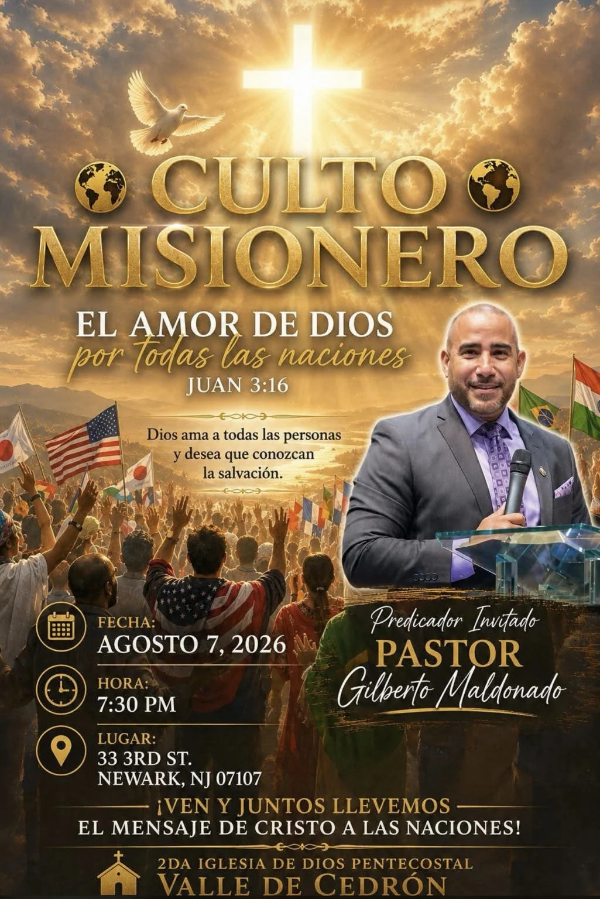

Enseñanza bíblica · Verdad · Fe · Esperanza
La Palabra que transforma tu vida.
Predicaciones, discipulado, oración y misiones con el Pastor Gilberto Maldonado, desde la Iglesia Príncipe de Paz en Philadelphia.
Nuestra iglesia
Un lugar para adorar, crecer y servir
Somos una congregación de la Iglesia Internacional Príncipe de Paz, comprometida con Jesucristo, Su Palabra y nuestra comunidad.
Dirección: 3661 N Marvine St., Philadelphia, PA
Servicios:
Miércoles 8:00 p.m.
Sábado 8:00 p.m.
Domingo 10:00 a.m.
Predicaciones y Podcast
Un mensaje para cada etapa de la vida
Explore enseñanzas sobre salvación, fe, familia, Espíritu Santo, adoración y vida cristiana.
Estudio bíblico virtual
Jueves por WhatsApp
Todos los jueves de 8:00 p.m. a 9:00 p.m., hora del Este.
Conéctese por cámara desde su hogar para estudiar la Palabra de Dios junto a la congregación. Dirigido por el Pastor Gilberto Maldonado.
El enlace del grupo o videollamada se añadirá cuando esté disponible.
📖Una hora en la PalabraJueves · 8–9 p.m.

Para nuevos creyentes
Primeros Pasos con Jesús
Una zona sencilla para comenzar a leer la Biblia, crecer en la fe y estudiar el Evangelio de Juan capítulo por capítulo.
- 21 lecciones del Evangelio de Juan
- Preguntas sencillas por capítulo
- Progreso guardado en el dispositivo
- Botón para preguntar al pastor por correo
Próximo evento
Culto Misionero

El amor de Dios por todas las naciones
Predicador invitado: Pastor Gilberto Maldonado
Fecha: 7 de agosto de 2026
Hora: 7:30 p.m.
Lugar: 33 3rd St., Newark, NJ 07107
2da Iglesia de Dios Pentecostal Valle de Cedrón.
Ver ubicación
Cobertura ministerial
Iglesia Internacional Príncipe de Paz
La congregación de Philadelphia sirve bajo la cobertura y liderazgo del Pastor General Rev. Rodolfo Solórzano, de la iglesia central ubicada en 132 Palisade Ave., Garfield, NJ.
Con profundo agradecimiento reconocemos su confianza, mentoría y dirección espiritual. También honramos a la Pastora Masiel Solórzano por su apoyo, servicio y dedicación junto al Pastor Solórzano.
Misiones en Guatemala
Cobán y Lanquín
Compartiendo el evangelio, sirviendo a las familias y celebrando la inauguración del templo en Aldea Chicachuy, Lanquín.
Participe en la obra
Diezmos, ofrendas y misiones
Una sección organizada para apoyar el ministerio local, el fondo misionero, benevolencia y otros proyectos de la iglesia.
Ver formas de darNo está solo
Permítanos orar por usted
Al enviar su petición, llegará a nuestro correo ministerial y recibirá una respuesta automática de confirmación.